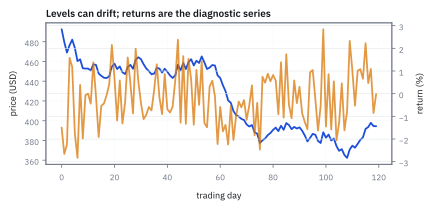

16.1 Stationarity and the Autocorrelation Function
วันนี้ขึ้น พรุ่งนี้มักขึ้นต่อหรือไม่? แล้วถ้าวันนี้ขยับแรง พรุ่งนี้มักแรงต่อไหม? เราจะเทียบข้อมูลทีละคู่ และแยกสองคำถามนี้ออกจากกัน
ทีมวิจัยสรุปผลตอบแทนรายวันของดัชนีหุ้นสหรัฐ 1,000 วันมาสองตัวเลข: autocorrelation ระหว่างผลตอบแทนเมื่อวานกับวันนี้คือ +0.031 และของขนาดการขยับ $|r_t|$ คือ +0.284 เทรดเดอร์คนหนึ่งบอกว่า “บวกทั้งคู่ วันขึ้นมักตามด้วยวันขึ้น ซื้อตามได้เลย” ตัวเลขไหนเป็นสัญญาณจริง และมันบอกเรื่องทิศทางหรือเรื่องความเสี่ยง?
ลองตอบก่อนเปิดเฉลย
+0.031 ยังแยกจากศูนย์ไม่ได้ ข้อมูลที่ไม่มีความจำเลยให้ค่าอยู่ในช่วง ±0.062 ได้ 95% ของเวลา ค่า t จึงแค่ 0.98 และถ้าค่าจริงเป็น 0.031 พอดี ต้องใช้ข้อมูลราว 3,998 วัน หรือเกือบ 16 ปี ค่าขนาดนี้จึงจะแตะเส้นเกณฑ์ ส่วน +0.284 มีค่า t 8.98 และ Ljung–Box สาม lag ได้ 184.8 เทียบเกณฑ์ 7.815 วันแรงบอกว่าพรุ่งนี้น่าจะแรง แต่ไม่ได้บอกว่าขึ้นหรือลง ความเสี่ยงพยากรณ์ได้ ทิศทางไม่ได้
สิ่งที่เราจะสร้าง
บทก่อน ๆ ส่วนใหญ่ถือว่าข้อมูลแต่ละวันอิสระต่อกัน บทนี้ถามกลับ: ค่าวันนี้ยังจำค่าเมื่อวานได้แค่ไหน เครื่องมือแรกคือ autocorrelation function (ACF) คือ correlation ของอนุกรมกับตัวมันเองที่เลื่อนไป $k$ วัน เราจะนับมันด้วยมือจากข้อมูลหกวันก่อน แล้วค่อยเขียนเป็นสูตร
จากนั้นถามสามคำถามที่ตัดสินว่าตัวเลขนี้เชื่อได้ไหม: กฎของข้อมูลต้องไม่เปลี่ยนตามวันที่ ซึ่งบังคับให้ใช้ผลตอบแทนแทนราคา, ความบังเอิญสร้างค่าได้กว้างแค่ไหน และถ้าดูหลาย lag พร้อมกันต้องรวมเป็นตัวเลขเดียวอย่างไร สุดท้ายดูรูปร่างการจางของความจำ ซึ่ง 16.2–16.4 จะสร้างแบบจำลองให้
ตัวเลข ACF ของข้อมูล 1,000 วันในหน้านี้เป็นค่าสมมติ ตั้งให้มีลักษณะแบบที่พบในผลตอบแทนรายวันของดัชนีหุ้นสหรัฐ ไม่ได้วัดจากข้อมูลชุดใดชุดหนึ่ง ผลตอบแทนทุกตัวใช้หน่วยทศนิยม 0.01 คือ 1%
ศัพท์ที่ใช้ในหัวข้อนี้
- Time series
- ข้อมูลที่เรียงตามเวลา ลำดับมีความหมาย สลับวันกันแล้วได้ข้อมูลคนละชุด เช่นราคาปิดรายวันหรือสเปรดรายเดือน
- Lag
- ระยะห่างเป็นจำนวนช่วงเวลาระหว่างสองค่าที่จับคู่กัน ในข้อมูลรายวัน lag 1 คือคู่เมื่อวานกับวันนี้ lag 20 คือคู่ที่ห่างกันราวหนึ่งเดือนทำการ
- Autocorrelation function (ACF)
- ชุดของ correlation ระหว่างอนุกรมกับตัวมันเองที่เลื่อนไป $k$ ช่วง สำหรับ $k=1, 2, \ldots$ ใช้ดูว่าความจำยาวแค่ไหนและจางแบบไหน ก่อนเลือกแบบจำลอง
- Weak stationarity
- สมบัติที่ค่าเฉลี่ย, variance และ covariance ของคู่ที่ห่างกัน $k$ วันไม่ขึ้นกับวันที่ มีไว้เพื่อให้การเอาคู่จากทุกช่วงเวลามาเฉลี่ยรวมเป็นตัวเลขเดียวมีความหมาย
- White noise
- อนุกรมที่ค่าเฉลี่ยคงที่และ ACF เป็นศูนย์ทุก lag ใช้เป็นเส้นฐานของ “ไม่มีความจำเชิงเส้น” และเป็นสิ่งที่ residual ของแบบจำลองที่ดีควรเป็น
- Volatility clustering
- วันที่ขยับแรงมักอยู่ติดกัน วันเงียบก็อยู่ติดกัน เห็นเป็น ACF บวกของ $|r_t|$ ทั้งที่ ACF ของ $r_t$ แทบเป็นศูนย์ หลักฐานจากข้อมูลจริงอยู่ใน 10.4
- Ljung–Box test
- สถิติที่รวม ACF กำลังสองหลาย lag เป็นตัวเลขเดียวแล้วเทียบกับ chi-square ใช้แทนการไล่ดูทีละ lag ซึ่งให้สัญญาณหลอกได้ง่าย
สัญลักษณ์และหน่วย
| สัญลักษณ์ | ความหมาย | หน่วย |
|---|---|---|
| $r_t$ | ผลตอบแทนของวันที่ $t$ | ทศนิยมต่อวัน |
| $|r_t|$ | ขนาดของการขยับ ไม่สนทิศ | ทศนิยมต่อวัน |
| $P_t$ | ราคาปิดของวันที่ $t$ | USD |
| $n,\ k$ | จำนวนวันในข้อมูล และ lag | วัน |
| $\gamma_k$ | autocovariance ที่ lag $k$; $\gamma_0$ คือ variance | ทศนิยม² |
| $\rho_k,\ \hat\rho_k$ | ACF ของแบบจำลอง และค่าที่ประมาณจากข้อมูล | ไม่มีหน่วย |
| $h,\ Q(h)$ | จำนวน lag ที่รวม และค่า Ljung–Box | จำนวน และไม่มีหน่วย |
ขั้นที่ 1 — หกวันด้วยมือ: เลื่อนอนุกรมหนึ่งวันแล้วจับคู่
คำถาม “เมื่อวานบอกอะไรเกี่ยวกับวันนี้” แปลเป็นการคำนวณได้ตรง ๆ: จับคู่ทุกวันกับวันก่อนหน้า หักค่าเฉลี่ยออก แล้วดูว่าผลคูณของคู่เป็นบวกหรือลบโดยรวม ให้ $N_1$ เป็นผลรวมผลคูณของคู่ที่ห่างกันหนึ่งวัน และ $D$ เป็นผลรวมกำลังสองของทุกวัน ข้อมูลหกวันนี้ใช้หน่วย %
ใช้ตัวเลขชุดเดิม แต่ทิ้งเครื่องหมาย ให้ $x=|r|$ เหลือแค่ขนาดของการขยับ แล้วนับแบบเดียวกัน
ชุดแรกดูทิศทาง: +3 ตามหลัง +2 ได้ผลคูณ +6 แต่ −3 ตามหลัง +3 ได้ −9 คู่ที่ไปทางเดียวกันกับคู่ที่สวนกันหักกันพอดี เหลือศูนย์ ทิศเมื่อวานจึงไม่บอกทิศวันนี้เลย
ชุดที่สองดูขนาด: วันแรง (3, 3) อยู่ติดกัน วันเบา (1, 1) ก็อยู่ติดกัน ผลคูณของการเบี่ยงจึงเป็นบวกและได้ 0.5 นี่คือ volatility clustering ในหกตัวเลข และเป็นตัวอย่างว่า correlation เป็นศูนย์ไม่ได้แปลว่าอิสระกัน (5.4): ขนาดของวันนี้ยังขึ้นกับขนาดของเมื่อวาน
ขั้นที่ 2 — เขียนการนับเป็นสูตร
ขั้นที่ 1 ทำกับ lag 1 เท่านั้น ถ้าจับคู่ที่ห่างกัน $k$ วันก็ได้ lag $k$ นิยามของแบบจำลองใช้ค่าเฉลี่ยจริง $\mu$ ส่วนตัวประมาณจากข้อมูลใช้ $\bar r$ แทน สองบรรทัดแรกเป็นนิยาม บรรทัดสามคือสิ่งที่นับมือไปแล้ว
$\gamma_k$ คือค่าเฉลี่ยของผลคูณการเบี่ยงของคู่ที่ห่างกัน $k$ วัน หารด้วย $\gamma_0$ ซึ่งคือ variance แล้วหน่วยตัดกันหมด ตัวเลขจึงเทียบข้ามสินทรัพย์และข้าม lag ได้ ตัวอย่างหกวันที่ lag 2 เหลือแค่สี่คู่: $(-3)(2)$, $(-2)(3)$, $(1)(-3)$ และ $(-1)(-2)$
ตัวประมาณใช้ตัวส่วนเดียวกันทุก lag คือกำลังสองของทั้ง $n$ วัน แม้ตัวเศษมีแค่ $n-k$ คู่ ผลคือ $|\hat\rho_k|\le1$ เสมอตาม Cauchy–Schwarz (6.5) แลกกับการที่ lag ไกล ๆ ถูกดึงเข้าหาศูนย์เล็กน้อย ค่า −0.464 จากสี่คู่ดูใหญ่ ขั้นที่ 4 จะบอกว่าใหญ่พอหรือยัง
ขั้นที่ 3 — ตัวเลขนี้มีความหมายเมื่อกฎไม่ขึ้นกับวันที่
สูตรในขั้นที่ 2 เอาคู่จากทุกวันมาเฉลี่ยรวมเป็นตัวเลขเดียว การทำแบบนั้นมีความหมายก็ต่อเมื่อทุกคู่มาจากกฎเดียวกัน ถ้าปีแรกกับปีหลังมีค่าเฉลี่ยคนละระดับ ค่าเฉลี่ยรวมก็ไม่ใช่ของปีไหนเลย เงื่อนไขนี้คือ weak stationarity เป็นนิยามที่เลือกใช้ ไม่ใช่ผลที่พิสูจน์: สามบรรทัดแรกต้องจริงทุก $t$ จากนั้นลองตรวจราคา
log ราคาวันนี้คือ log ราคาวันแรกบวกผลตอบแทนทุกวันที่ผ่านมา ถ้าผลตอบแทนอิสระกันและมี variance $\sigma^2$ เท่ากันทุกวัน variance ของผลรวม $t$ ก้อนคือ $t\sigma^2$
SD ของผลตอบแทน log สะสมหนึ่งวันคือ 0.012 และของ 1,000 วันประมาณ 0.379 หรือ 37.9% ในหน่วย log return ไม่ใช่ SD ของราคาหารด้วยราคาตั้งต้น เงื่อนไขข้อสองจึงไม่ผ่านสำหรับ log ราคา ส่วนผลตอบแทนที่สมมติให้อิสระและแจกแจงเหมือนกันผ่านทั้งสามข้อ
volatility clustering เกิดได้แม้ผลตอบแทนยัง stationary: ในแบบจำลองที่เข้าเงื่อนไข variance แบบไม่ใช้ข้อมูลอดีตอาจคงที่ แต่ variance เมื่อรู้ข้อมูลถึงวันนี้แล้วเปลี่ยนได้ 16.4 จะทำให้เห็นด้วยตัวเลข
ลองให้โค้ดท้ายหน้าสร้างราคาแบบ random walk 1,000 วันที่ SD 1.2% ต่อวัน แล้วคำนวณ ACF ของระดับราคาตรง ๆ ได้ 0.9955 ที่ lag 1 และยัง 0.9156 ที่ lag 20 ส่วน ACF ของผลตอบแทนชุดเดียวกันได้ −0.025 ตัวเลข 0.99 ไม่ได้บอกว่าพยากรณ์ราคาได้ มันบอกแค่ว่าราคาวันนี้อยู่ใกล้ราคาเมื่อวาน ดังที่เกิดในเส้นทางจำลองนี้
Figure 16.1a — ราคาเดินไปเรื่อย ๆ แต่ผลตอบแทนแกว่งรอบศูนย์

ขั้นที่ 4 — ถ้าไม่มีความจำเลย ค่าที่ได้จะแกว่งแค่ไหน
กลับมาที่โจทย์เปิด: 0.031 ใหญ่พอไหม วิธีตอบคือหาว่าถ้าผลตอบแทนไม่มีความจำเลย $\hat\rho_k$ จะแกว่งรอบศูนย์กว้างเท่าไร สมมติให้ $r_t$ อิสระกันทุกวัน ค่าเฉลี่ยศูนย์ variance $\sigma^2$ แล้วดูตัวเศษของ $\hat\rho_k$ ทีละก้อน
บรรทัดแรกใช้ความอิสระ: ค่าเฉลี่ยของผลคูณแยกเป็นผลคูณของค่าเฉลี่ยซึ่งเป็นศูนย์ บรรทัดที่สามคือจุดที่คนสะดุด ทำไมผลคูณของสองคู่คนละวันไม่มี covariance ในสี่ตัวที่คูณกัน ตัวที่มีวันที่ล่าสุดปรากฏครั้งเดียวและอิสระจากอีกสามตัว ค่าเฉลี่ยของทั้งก้อนจึงเป็นศูนย์ variance ของผลรวม $n-k$ ก้อนจึงบวกกันตรง ๆ
หารด้วย $\sigma^2$ แล้ว $\sigma^4$ บนล่างตัดกัน ผลไม่ขึ้นกับว่าข้อมูลผันผวนแค่ไหน แถบ 95% คือ $\pm1.96/\sqrt n$ โดย 1.96 มาจาก quantile ของ Normal ใน 1.9 ที่ 1,000 วันได้ ±0.062 ส่วนข้อมูลหกวันใช้ฝึกคำนวณเท่านั้น แม้แทนสูตรได้ $\pm1.96/\sqrt6\approx\pm0.80$ แต่ตัวอย่างเล็กเกินกว่าจะเชื่อแถบ Normal นี้แล้วสรุปว่า −0.464 เป็น noise
ที่มาของแถบนี้ใช้ “อิสระ” ไม่ใช่แค่ “correlation เป็นศูนย์” ถ้าผลตอบแทนกำลังสองมี covariance บวก ค่าเฉลี่ยของ $r_t^2r_{t-k}^2$ จะมากกว่า $\sigma^4$ แถบที่เหมาะสมอาจกว้างกว่า ±0.062 ซอฟต์แวร์สถิติที่ดีมีแถบแบบ robust ที่ปรับเรื่องนี้ให้เลือกใช้
ขั้นที่ 5 — ดู 20 แท่งพร้อมกัน แล้วเลือกแท่งที่หลุด คือการหลอกตัวเอง
กราฟ ACF ปกติแสดง 20 แท่งพร้อมกัน แต่ละแท่งมีโอกาส 5% ที่จะหลุดแถบโดยบังเอิญ ไล่ดูทั้ง 20 แท่งแล้วหยิบแท่งที่หลุดมาเล่า ก็คือการทดสอบ 20 ครั้งแล้วรายงานครั้งที่ชนะ (3.6) ให้ $A$ เป็นจำนวนแท่งที่หลุดเมื่อข้อมูลเป็น noise ล้วน โดยถือว่า 20 แท่งเกือบอิสระกัน ซึ่งจริงโดยประมาณเมื่อไม่มีความจำ
การประมาณนี้บอกว่าข้อมูล noise ล้วนราวสองในสามชุดจะมีแท่งหลุดอย่างน้อยหนึ่งแท่ง และโดยเฉลี่ยประมาณหนึ่งแท่ง แท่งที่หลุดแท่งเดียวในกราฟ 20 แท่งจึงเป็นสิ่งที่ควรคาดไว้ ไม่ใช่การค้นพบ
โค้ดท้ายหน้าลองจริง: สร้าง noise ล้วน 1,000 ชุด ชุดละ 1,000 วัน ได้ 61.7% ของชุดที่มีแท่งหลุด และเฉลี่ย 0.949 แท่งต่อชุด ต่างจากสูตร 2.5 จุด ซึ่งอยู่ในระดับที่การสุ่ม 1,000 ชุดคลาดได้ (SE ราว 1.5 จุด)
Figure 16.1b — สาม lag แรกจากโจทย์เดียวกัน
| ห่างกัน กี่วัน | ผลตอบแทน มีเครื่องหมาย | ขนาด ไม่เอาเครื่องหมาย |
|---|---|---|
| 1 | 0.031 | 0.284 |
| 2 | −0.018 | 0.241 |
| 3 | 0.009 | 0.213 |

ขั้นที่ 6 — รวมหลาย lag เป็นตัวเลขเดียว: Ljung–Box
ทางแก้ของขั้นที่ 5 คือรวมทุก lag เป็นตัวเลขเดียวแล้วเทียบกับเกณฑ์เดียว ทำให้แต่ละ $\hat\rho_k$ เป็นเลขมาตรฐานก่อนโดยหารด้วย SE ของมัน
สำหรับข้อมูลอิสระที่มีการแจกแจงเหมือนกันและ moment ที่จำเป็นมีค่าจำกัด เมื่อจำนวนข้อมูลมากและเลือก $h$ คงที่ แต่ละ $Z_k$ เป็น Normal มาตรฐานโดยประมาณ (3.2) และเกือบอิสระกัน ผลรวมกำลังสองของ $h$ ตัวจึงเป็น chi-square $h$ องศาอิสระ (8.4)
บรรทัดที่สามใช้ SE จากขั้นที่ 4 ตรง ๆ เรียกว่า Box–Pierce บรรทัดสุดท้ายคือ Ljung–Box ซึ่งใช้ variance ที่ละเอียดกว่า
ตัวหาร $n-k$ มาจากจำนวนคู่ที่เหลือจริงที่ lag $k$ แบบเดียวกับ $(n-k)/n^2$ ในขั้นที่ 4 ส่วน $n+2$ แทน $n$ มาจากการคำนวณ variance แบบละเอียดของข้อมูล Normal ขนาดจำกัด เรารับส่วนนี้มาเป็นของที่ให้
แทนค่าของโจทย์เปิด $n=1000$ และ ACF สาม lag แรกของทั้งสองอนุกรม เกณฑ์ 7.815 คือจุดที่พื้นที่หางขวาของ chi-square 3 องศาอิสระเหลือ 5% โค้ดท้ายหน้าหามันด้วยการอินทิเกรต density
ก้อนในวงเล็บคือ $\hat\rho_k^2/(n-k)$ ทีละ lag เช่น $0.031^2/999=9.620\times10^{-7}$ ทิศทางได้ 1.371 ต่ำกว่าเกณฑ์มาก ไม่มีหลักฐานของความจำ ขนาดได้ 184.8 สูงกว่าเกณฑ์ราว 24 เท่า
ที่ 1,000 วันการปรับของ Ljung–Box แทบไม่มีผล Box–Pierce ได้ 1.366 เทียบ 1.371 แต่ที่ 50 วัน ตัวคูณของ lag 1 คือ $52/49=1.061$ และของ lag 3 คือ $52/47=1.106$ ต่างจาก Box–Pierce 6% ถึง 11%
ถ้าทดสอบ residual ของ ARMA($p,q$) ที่ฟิตมาแล้ว มักใช้ $h-p-q$ องศาอิสระเมื่อ $h\gt p+q$ ไม่ใช่หัก parameter ทุกชนิดแบบเหมารวม และถ้า variance เปลี่ยนตามอดีต ต้องตรวจว่าเกณฑ์ทดสอบแบบนี้ยังเหมาะหรือใช้วิธีที่รองรับความผันผวนเปลี่ยนได้
Figure 16.1c — รวมสาม lag แล้วเทียบกับเกณฑ์เดียวกัน
| ข้อมูล | Q(3) | เทียบ 7.815 |
|---|---|---|
| ผลตอบแทนมีเครื่องหมาย | 1.371 | ต่ำกว่าเกณฑ์ |
| ขนาดไม่เอาเครื่องหมาย | 184.8 | สูงกว่าเกณฑ์ |

ขั้นที่ 7 — ตัดสินโจทย์เปิด: ทิศทางหรือความเสี่ยง
โจทย์ให้อะไรมาบ้าง: $n=1000$ วัน ACF ของ $r_t$ ที่ lag 1–3 คือ 0.031, −0.018, 0.009 ของ $|r_t|$ คือ 0.284, 0.241, 0.213 และ $|r_t|$ ที่ lag 20 คือ 0.118 แถบมาจากขั้นที่ 4 และ $Q(3)$ มาจากขั้นที่ 6
คำตอบ: ทิศทางไม่มีหลักฐาน ช่วง 95% ครอบทั้งศูนย์และค่าติดลบ ข้อมูล 1,000 วันจึงบอกไม่ได้แม้แต่เครื่องหมายของความจำ ถ้าค่าจริงคือ 0.031 พอดี ต้องใช้ราว 3,998 วัน หรือ 15.9 ปีที่ปีละ 252 วันทำการ (1.1) ค่าขนาดนี้จึงจะแตะเส้น 1.96 SE และแม้ถึงตอนนั้นก็ยังพลาดได้ราวครึ่งหนึ่ง ส่วนขนาดอยู่ห่างศูนย์ 8.98 SE ที่ lag 1 และยังเกิน 3.7 SE ที่ lag 20 ตัวเลขชุดนี้จึงสนับสนุนให้สร้างแบบจำลองขนาดการขยับ มากกว่าสรุปว่าซื้อตามวันขึ้นแล้วจะได้กำไร การอนุมานจริงต้องเลือก SE และเกณฑ์ทดสอบให้เหมาะกับข้อมูลด้วย
$R^2$ บอกขนาดของประโยชน์ เพราะ regression เส้นตรงตัวแปรเดียวมี $R^2$ เท่ากับ correlation ยกกำลังสอง (15.1) เมื่อมี intercept; ในที่นี้ใช้ ACF แทน correlation ของคู่ข้อมูลโดยประมาณ: ใช้ $r_{t-1}$ ทำนาย $r_t$ อธิบาย variance ได้ 0.096% ส่วน $|r_{t-1}|$ ทำนาย $|r_t|$ ได้ 8.07% มากกว่า 84 เท่า
ตรวจเองใน 10 วินาที: $\sqrt{1000}\approx31.62$ ดังนั้น $1.96/31.62\approx0.062$ และ $0.284\times31.62\approx8.98$ ส่วน $3{,}998/252\approx15.9$ ปี
ขั้นที่ 8 — ความจำของขนาดจางแบบไหน
รู้แล้วว่าขนาดมีความจำ คำถามถัดไปคือมันจางเร็วแค่ไหนและจางแบบไหน เพราะรูปร่างนี้บอกว่าควรใช้แบบจำลองใด ลองสองรูปร่าง แบบแรก geometric ลดด้วยอัตราคงที่ทุก lag ฟิตจาก lag 1 กับ 2 แบบที่สอง power law ลดตาม $k^{-d}$ ฟิตจาก lag 1 กับ 20
ค่าที่วัดได้ที่ lag 10 และ 20 คือ 0.152 และ 0.118 เส้น geometric ทำนายต่ำกว่าจริง 2.3 เท่าที่ lag 10 และ 9.4 เท่าที่ lag 20 ส่วน power law ทำนาย 0.1446 ที่ lag 10 ใกล้ของจริง
การเทียบนี้ลำเอียงให้ power law เพราะมันถูกบังคับให้ผ่าน lag 20 พอดี ถ้าฟิตทั้งสองแบบด้วย least squares บน log ของทั้ง 20 lag เส้น geometric ที่ดีที่สุดยังคลาดได้ถึง 19% ส่วน power law คลาดไม่เกิน 4.6% ความจำของขนาดจึงลดเร็วช่วงแรกแล้วลากหางยาว
แบบจำลองที่มีอัตราความจำตัวเดียวอย่าง AR(1) ใน 16.2 สร้างรูปนี้ไม่ได้ GARCH ใน 16.4 เข้าใกล้กว่าด้วยการตอบสนองแรงในวันแรกแล้วจางช้า แต่ 20 lag จากข้อมูลชุดเดียวยังไม่พอพิสูจน์ความจำยาว มันเป็นเบาะแสในการเลือกแบบจำลอง
Figure 16.1d — geometric decay เทียบ power law

คำถามที่ควรถามออกมาดัง ๆ
ทำไมไม่ใช้ correlation ธรรมดาของคู่ $(r_t, r_{t-1})$? correlation ธรรมดาหักค่าเฉลี่ยและหาร SD ของแต่ละคอลัมน์แยกกัน ถ้าข้อมูล stationary สองคอลัมน์ควรมีค่าเฉลี่ยและ SD เท่ากันอยู่แล้ว ACF จึงใช้ค่าเฉลี่ยและ variance ของทั้งอนุกรมชุดเดียว ตัวเลขต่างกันเล็กน้อยเมื่อ $n$ ใหญ่ แต่แบบ ACF รับประกัน $|\hat\rho_k|\le1$ และเทียบข้าม lag ได้
ใช้ simple return หรือ log return? ใช้ได้ทั้งคู่ ที่การขยับวันละราว 1% สองแบบต่างกันราว $0.01^2/2=0.00005$ ACF แทบไม่เปลี่ยน สิ่งที่ห้ามคือผสมหน่วย เช่นคำนวณบางวันเป็น % บางวันเป็นทศนิยม
ทำไมดู $|r_t|$ ไม่ดู $r_t^2$? ดูได้ทั้งคู่ $r_t^2$ ต่อกับ variance ตรงกว่า และเป็นสิ่งที่ 16.4 ใช้ แต่วันสุดโต่งไม่กี่วันครอบงำ $r_t^2$ ได้มากกว่า เพราะยกกำลังสองแล้วค่าใหญ่ยิ่งใหญ่ $|r_t|$ จึงนิยมใช้วินิจฉัยเพราะนิ่งกว่า
ความผิดที่ให้คำตอบผิดโดยไม่มีอะไรเตือน
หา ACF ของระดับราคา: random walk ในขั้นที่ 3 ได้ 0.9955 ที่ lag 1 ทั้งที่ผลตอบแทนไม่มีความจำเลย ตัวเลขใกล้ 1 แบบนี้เกิดได้เมื่อระดับราคาค่อย ๆ เปลี่ยนและข้อมูลยังไม่มีค่าเฉลี่ยคงที่ และเป็นต้นเหตุของ regression หลอกระหว่างสองอนุกรมที่ไม่เกี่ยวกัน (15.5)
หยิบแท่งที่หลุดแท่งเดียว: การประมาณในขั้นที่ 5 ให้โอกาสประมาณ 64% ที่ noise ล้วนจะมีแท่งหลุดอย่างน้อยหนึ่งแท่ง รายงานเฉพาะ lag ที่ “ชนะ” โดยไม่รวมทั้งหมดด้วย Ljung–Box คือการค้นหาจนเจอ ไม่ใช่การพบสัญญาณ
ลืมว่าราคามาจากไหน: ราคาปิดของหุ้นที่ซื้อขายน้อยอาจค้างที่ราคาเก่า ทำให้เกิด ACF บวกปลอม ส่วนราคาที่เด้งระหว่าง bid กับ ask สร้าง ACF ติดลบปลอม ข้อมูลที่สลับ +1% กับ −1% ทุกวันได้ $\hat\rho_1=-0.833$ (โจทย์ข้อ 3) สองผลนี้หักล้างกันจนดูเหมือนไม่มีอะไรได้ 16.3 จะแยกผลของการเด้งออกมา
อ่าน ACF เป็นศูนย์ว่าอิสระ: ข้อมูลหกวันในขั้นที่ 1 มี ACF ของทิศทางเป็นศูนย์พอดี แต่ขนาดยังจำกันที่ 0.5 ACF วัดได้แค่ความจำเชิงเส้น
ใช้ทำอะไรบนโต๊ะจริง
ก่อนฟิตแบบจำลองใดกับอนุกรมใหม่ คนทำงานดู ACF สองชุดเสมอ: ของผลตอบแทนเพื่อหาความจำของทิศทาง และของ $|r_t|$ หรือ $r_t^2$ เพื่อหาความจำของความเสี่ยง ผลบอกว่าควรใช้แบบจำลองของค่าเฉลี่ยใน 16.2–16.3 แบบจำลองของความผันผวนใน 16.4 หรือทั้งสอง
หลังฟิตเสร็จ ACF และ Ljung–Box ของ residual คือการตรวจงาน residual ที่ยังมีความจำแปลว่าแบบจำลองยังจับไม่หมด ส่วนงานหาสัญญาณเทรด คำถามที่ขั้นที่ 7 ตอบคือ “ต้องใช้ข้อมูลกี่ปีจึงจะเชื่อได้” ซึ่งมักตัดสินงานวิจัยได้ก่อนเขียนโค้ดบรรทัดแรก
สามโจทย์ตรวจความเข้าใจ
1. มีข้อมูลรายวันหนึ่งปี 252 วัน วัด $\hat\rho_1=0.10$ ได้ ผ่านแถบ 95% ไหม และถ้าค่าจริงคือ 0.10 ต้องใช้กี่วันจึงผ่าน?
เฉลย
แถบคือ $1.96/\sqrt{252}=1.96/15.87\approx0.1235$ ค่า 0.10 ยังอยู่ในแถบ ไม่ผ่าน ค่าขนาดนี้จะแตะเส้นเกณฑ์เมื่อ $n\ge(1.96/0.10)^2=384.2$ คือ 385 วัน หรือราวปีครึ่ง ความจำที่ใหญ่กว่าโจทย์เปิดสามเท่าต้องใช้ข้อมูลน้อยกว่าเก้าเท่า เพราะ $n$ ขึ้นกับกำลังสองของ $1/\rho$
2. ข้อมูล 100 วันให้ $\hat\rho_1=0.15$ และ $\hat\rho_2=0.10$ จงหา $Q(2)$ และเทียบกับเกณฑ์ 95% ของ chi-square 2 องศาอิสระ
เฉลย
$Q(2)=100(102)\big(0.0225/99+0.01/98\big)=10{,}200(0.00032931)\approx3.359$ chi-square 2 องศาอิสระมี CDF $1-e^{-x/2}$ เกณฑ์จึงหาได้ด้วยมือจาก $e^{-x/2}=0.05$ คือ $x=-2\ln0.05\approx5.991$ ค่า 3.359 ต่ำกว่าเกณฑ์ ยังไม่มีหลักฐานของความจำ แม้แท่งแรก 0.15 จะดูใหญ่ เพราะแถบของ 100 วันกว้างถึง ±0.196
3. ผลตอบแทนหกวันคือ $(1, -1, 1, -1, 1, -1)\%$ จงหา $\hat\rho_1$ ของ $r_t$ และของ $|r_t|$
เฉลย
ค่าเฉลี่ยเป็นศูนย์ ผลคูณของห้าคู่ติดกันเป็น −1 ทุกคู่ รวม −5 ตัวส่วนคือ 6 จึงได้ $\hat\rho_1=-5/6\approx-0.833$ ส่วน $|r_t|$ เป็น 1 ทุกวัน หักค่าเฉลี่ยแล้วเป็นศูนย์หมด ได้ $0/0$ ซึ่งนิยามไม่ได้ ไม่ใช่ศูนย์ โค้ดท้ายหน้าจึงปฏิเสธอนุกรมคงที่แทนที่จะตอบตัวเลข รูปแบบสลับขึ้นลงแบบนี้คือร่องรอยของการเด้งระหว่าง bid กับ ask ใน 16.3
คำนวณซ้ำด้วย JavaScript
รันใน Node.js ได้โดยไม่ติดตั้งแพ็กเกจ โค้ดคำนวณ ACF จากข้อมูลดิบ ปฏิเสธอนุกรมคงที่และ lag ที่เกินข้อมูล หาเกณฑ์ chi-square ด้วยการอินทิเกรต density แบบ Simpson แทนการเปิดตาราง สร้าง random walk และ noise ล้วนด้วยเครื่องสุ่มแบบมี seed เพื่อให้ทุกคนได้ตัวเลขชุดเดียวกับขั้นที่ 3 และ 5 แล้วพิมพ์ทุกตัวเลขของหน้านี้เป็น JSON บรรทัดเดียว
function series(x) {
if (!Array.isArray(x) || x.length < 3 || ![...x].every(Number.isFinite)) {
throw new TypeError('Need an array of at least three finite numbers');
}
return x.length;
}
// Sample ACF: pairs k apart over the same denominator for every lag, so |rho_k| <= 1.
function acf(x, maxLag) {
const n = series(x);
if (!Number.isInteger(maxLag) || maxLag < 1 || maxLag >= n) throw new RangeError('Lag must be an integer from 1 to n - 1');
const mean = x.reduce((s, v) => s + v, 0) / n, d = x.map(v => v - mean);
const bottom = d.reduce((s, v) => s + v * v, 0);
if (!(bottom > 0)) throw new RangeError('Constant series: the ACF is 0/0, undefined');
return Array.from({length: maxLag}, (_, j) => {
let top = 0;
for (let t = j + 1; t < n; t++) top += d[t] * d[t - j - 1];
return top / bottom;
});
}
function checkRhos(rhos, n) {
if (!Array.isArray(rhos) || !rhos.length || ![...rhos].every(r => Number.isFinite(r) && Math.abs(r) <= 1)) {
throw new TypeError('Need autocorrelations between -1 and 1');
}
if (!Number.isInteger(n) || n <= rhos.length + 1) throw new RangeError('Need an integer n larger than the number of lags + 1');
}
const band = (n, z = 1.96) => z / Math.sqrt(n);
function ljungBox(rhos, n) {
checkRhos(rhos, n);
return n * (n + 2) * rhos.reduce((s, r, i) => s + r * r / (n - i - 1), 0);
}
function boxPierce(rhos, n) {
checkRhos(rhos, n);
return n * rhos.reduce((s, r) => s + r * r, 0);
}
// Chi-square density with h degrees of freedom, integrated by Simpson's rule on a fine grid.
function chiSquareCdf(x, h) {
if (!Number.isInteger(h) || h < 2 || h > 40 || !(x >= 0)) throw new RangeError('Need 2 <= h <= 40 and x >= 0');
let logGamma = h % 2 ? Math.log(Math.sqrt(Math.PI)) : 0;
for (let a = h % 2 ? 0.5 : 1; a < h / 2; a++) logGamma += Math.log(a);
const f = t => t > 0 ? Math.exp((h / 2 - 1) * Math.log(t) - t / 2 - (h / 2) * Math.log(2) - logGamma) : (h === 2 ? 0.5 : 0);
const steps = 20000, w = x / steps;
let s = f(0) + f(x);
for (let i = 1; i < steps; i++) s += (i % 2 ? 4 : 2) * f(i * w);
return s * w / 3;
}
function chiSquareCritical(h, p = 0.95) {
let lo = 0, hi = 200;
for (let i = 0; i < 60; i++) { const m = (lo + hi) / 2; if (chiSquareCdf(m, h) < p) lo = m; else hi = m; }
return (lo + hi) / 2;
}
// mulberry32 + Box-Muller: seeded, so every reader gets the same numbers.
function normals(seed) {
let a = seed >>> 0, spare = null;
const u = () => {
a = (a + 0x6D2B79F5) >>> 0;
let t = Math.imul(a ^ (a >>> 15), a | 1);
t ^= t + Math.imul(t ^ (t >>> 7), t | 61);
return (((t ^ (t >>> 14)) >>> 0) + 0.5) / 4294967296;
};
return () => {
if (spare !== null) { const z = spare; spare = null; return z; }
const radius = Math.sqrt(-2 * Math.log(u())), angle = 2 * Math.PI * u();
spare = radius * Math.sin(angle);
return radius * Math.cos(angle);
};
}
function randomWalk(n, sigma, seed) {
if (!Number.isInteger(n) || n < 3 || !(sigma > 0)) throw new RangeError('Need n >= 3 steps and sigma > 0');
const z = normals(seed), returns = [], prices = [];
let logPrice = Math.log(500);
for (let t = 0; t < n; t++) { const r = sigma * z(); returns.push(r); logPrice += r; prices.push(Math.exp(logPrice)); }
return {returns, prices};
}
// Pure noise, 20 lags per series: how often does at least one bar leave the band?
function falseAlarms(count, n, lags, seed) {
const z = normals(seed), limit = band(n);
let anyOutside = 0, barsOutside = 0;
for (let s = 0; s < count; s++) {
const out = acf(Array.from({length: n}, z), lags).filter(r => Math.abs(r) > limit).length;
barsOutside += out;
if (out > 0) anyOutside++;
}
return {share: anyOutside / count, barsPerSeries: barsOutside / count};
}
// Fit both decay shapes to all lags at once: a straight line through log(rho) against k or log(k).
function decayFit(rhos) {
if (!Array.isArray(rhos) || rhos.length < 3 || ![...rhos].every(r => r > 0 && r <= 1)) {
throw new RangeError('Need at least three positive autocorrelations');
}
const line = xs => {
const m = xs.length, y = rhos.map(Math.log);
const mx = xs.reduce((s, v) => s + v, 0) / m, my = y.reduce((s, v) => s + v, 0) / m;
let sxy = 0, sxx = 0;
for (let i = 0; i < m; i++) { sxy += (xs[i] - mx) * (y[i] - my); sxx += (xs[i] - mx) ** 2; }
const slope = sxy / sxx, fit = xs.map(v => Math.exp(my + slope * (v - mx)));
return {slope, fit, maxError: Math.max(...fit.map((f, i) => Math.abs(f / rhos[i] - 1)))};
};
const k = rhos.map((_, i) => i + 1), geo = line(k), pow = line(k.map(Math.log));
return {rate: Math.exp(geo.slope), geometricMaxError: geo.maxError, d: -pow.slope, powerMaxError: pow.maxError};
}
const six = [0.02, 0.03, -0.03, -0.02, 0.01, -0.01];
const sizeAcf = [0.284, 0.241, 0.213, 0.198, 0.186, 0.178, 0.169, 0.162, 0.157, 0.152,
0.148, 0.143, 0.139, 0.135, 0.131, 0.127, 0.124, 0.122, 0.120, 0.118];
const n = 1000, signed = [0.031, -0.018, 0.009], size = [0.284, 0.241, 0.213];
const walk = randomWalk(1000, 0.012, 1601);
const kGeo = size[1] / size[0], dPow = Math.log(size[0] / 0.118) / Math.log(20);
console.log(JSON.stringify({
six: {signed: acf(six, 2), size: acf(six.map(Math.abs), 2)},
se: 1 / Math.sqrt(n), band: band(n),
t: {signed: signed[0] * Math.sqrt(n), size: size[0] * Math.sqrt(n), sizeLag20: 0.118 * Math.sqrt(n)},
r2: {signed: signed[0] ** 2, size: size[0] ** 2},
ci: [signed[0] - band(n), signed[0] + band(n)], daysNeeded: (1.96 / signed[0]) ** 2,
q3: {signed: ljungBox(signed, n), size: ljungBox(size, n), boxPierce: boxPierce(signed, n)},
small: {factorLag1: 52 / 49, factorLag3: 52 / 47},
critical: {h2: chiSquareCritical(2), h3: chiSquareCritical(3), h20: chiSquareCritical(20)},
multiple: {formula: 1 - 0.95 ** 20, simulated: falseAlarms(1000, 1000, 20, 7)},
walk: {levelAcf: acf(walk.prices, 20).filter((_, i) => i === 0 || i === 19), returnAcf: acf(walk.returns, 1)[0]},
decay: {phi: kGeo, geometric: [3, 10, 20].map(k => size[0] * kGeo ** (k - 1)),
d: dPow, power: [3, 10, 20].map(k => size[0] * k ** -dPow), leastSquares: decayFit(sizeAcf)},
exercises: {band252: band(252), daysFor010: (1.96 / 0.10) ** 2, q2: ljungBox([0.15, 0.10], 100), crit2: -2 * Math.log(0.05),
bounce: acf([0.01, -0.01, 0.01, -0.01, 0.01, -0.01], 1)[0]}
}));ที่มาที่ไป
ปี 1926 George Udny Yule ตั้งคำถามว่าทำไมอนุกรมเวลาสองชุดที่ไม่เกี่ยวกันจึงมี correlation สูงได้ ตัวอย่างของเขาคือสัดส่วนการแต่งงานในโบสถ์ Church of England กับอัตราการตายในอังกฤษช่วง 1866–1911 ซึ่งได้ correlation ราว 0.95 เขาชี้ว่าต้นเหตุคืออนุกรมที่เดินไปเรื่อย ๆ ไม่ใช่ความสัมพันธ์จริง ซึ่งคือปัญหาของขั้นที่ 3
Aleksandr Khinchin วางทฤษฎีของกระบวนการ stationary ในปี 1934 และ Herman Wold พิสูจน์ในปี 1938 ว่ากระบวนการ stationary ใด ๆ แยกได้เป็นส่วนที่ทำนายได้สมบูรณ์จากอดีต บวกผลรวมถ่วงน้ำหนักของ shock ในอดีต ซึ่งเป็นรากของ 16.2 และ 16.3 ส่วน Box กับ Pierce เสนอสถิติรวมหลาย lag ในปี 1970 และ Ljung กับ Box ปรับให้แม่นขึ้นสำหรับข้อมูลน้อยในปี 1978
ข้อจำกัด: วิธีนี้สมมติอะไร และของจริงเป็นอย่างไร
| เรื่อง | วิธีนี้สมมติว่า | ของจริง | ผลเวลาใช้งาน |
|---|---|---|---|
| กฎคงที่ | ข้อมูลทั้งช่วงเป็น stationary | ตลาดเปลี่ยนระบอบ ช่วงวิกฤตกับช่วงสงบมีกฎคนละแบบ | ACF ของทั้งช่วงเป็นค่าเฉลี่ยของหลายระบอบ ไม่ตรงกับระบอบไหนเลย |
| แถบ ±1.96/√n | ผลตอบแทนอิสระกัน | มี volatility clustering | แถบแคบเกินจริง ค่าที่ดูเหมือนหลุดแถบอาจยังเป็นเสียงรบกวน |
| เส้นตรง | ความจำที่สนใจเป็นเชิงเส้น | ความจำอยู่ในขนาด ในหาง หรือในทิศทางแบบไม่เป็นเส้นตรง | ACF ของ $r_t$ เป็นศูนย์ไม่ได้แปลว่าไม่มีอะไรให้พยากรณ์ |
| หลาย lag | ทดสอบร่วมกันครั้งเดียว | คนมักไล่ดูหลายอนุกรม หลายช่วง หลาย lag | ต้องนับทุกการทดสอบที่ลองจริง ไม่ใช่เฉพาะที่รายงาน |
สิ่งที่ควรตอบได้หลังอ่าน
- ACF คือ correlation ของอนุกรมกับตัวเองที่เลื่อนไป $k$ วัน นับมือได้จากผลรวมผลคูณของคู่หารด้วยผลรวมกำลังสอง
- ตัวเลขนี้มีความหมายเมื่อข้อมูล stationary ราคาไม่ผ่านเพราะ variance โตตามเวลา จึงวิเคราะห์ผลตอบแทน และ volatility clustering ไม่ได้ขัดกับ stationarity
- ถ้าไม่มีความจำ $\hat\rho_k$ แกว่งด้วย SE ราว $1/\sqrt n$: ที่ 1,000 วันแถบ 95% คือ ±0.062 และ +0.031 มีค่า t แค่ 0.98
- ดู 20 แท่งพร้อมกัน noise ล้วนมีแท่งหลุดอย่างน้อยหนึ่งแท่ง 64% ของเวลา จึงรวมเป็น Ljung–Box: ทิศทางได้ 1.37 ขนาดได้ 184.8 เทียบเกณฑ์ 7.815
- ผลตอบแทนแทบไม่จำทิศทาง แต่จำขนาดได้นาน และความจำของขนาดลดเร็วช่วงแรกแล้วลากหางยาว
16.2 เริ่มสร้างแบบจำลองของความจำ แบบที่ง่ายที่สุดคือให้ค่าวันนี้เป็นส่วนหนึ่งของค่าเมื่อวานบวกข่าวใหม่ แล้วดูว่า ACF ของมันออกมาเป็นรูปร่างแบบไหน